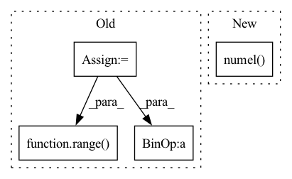

Pattern ID :8002
Before Change
// fcn_out: (..., *ny)
self.yshape = y0.shape
self.ynumel = y0.numel()
yndims = y0.ndim - ts.ndim + 1
self.ydims = tuple(range( -1, -yndims - 1, -1) ) // the dimension indices of *ny
self.y0 = y0
// get the slices to expand from (...,) to (..., *1)
ylast_slices = (Ellipsis,) + (None,) * yndims
self.ylast_slices = ylast_slices
direction = ts[1] - ts[0] // (...,)
After Change
self.func = lambda t, y: sgn * fcn(sgn * t, y.reshape(self.yshape), *params).reshape(-1)
self.dtype = y0.dtype
self.device = y0.device
n = torch.numel( y0)
self.K = torch.empty((self.n_stages + 1, n), dtype=self.dtype, device=self.device)
// convert the predefined tensors into the dtype and device
In pattern: SUPERPATTERN
Frequency: 3
Non-data size: 4
Instances Fragment ID: 28454983
Project Name: xitorch/xitorch
Commit Name: d91c4d6e56fb40b9f91fda53f69871e97dcb6abe
Time: 2021-12-30
Author: firman.kasim@gmail.com
File Name: xitorch/_impls/integrate/ivp/adaptive_rk.py
M Class Name: RKAdaptiveStepSolver
N Class Name: RKAdaptiveStepSolver
M Method Name: setup(5)
N Method Name: setup(5)
M Parent Class: object
N Parent Class: object
M File Name: xitorch/_impls/integrate/ivp/adaptive_rk.py
N File Name: xitorch/_impls/integrate/ivp/adaptive_rk.py
M Start Line: 54
M End Line: 77
N Start Line: 38
N End Line: 50
Before Change
device = torch.device("cuda" if backend == "nccl" else "cpu")
if backend == "nccl":
world_size = get_world_size()
total_size = len(bytearray(nncore.dumps(data))) * world_size
pynvml.nvmlInit()
for i in range( world_size) :
handle = pynvml.nvmlDeviceGetHandleByIndex(i)
meminfo = pynvml.nvmlDeviceGetMemoryInfo(handle)
if meminfo.free < total_size:After Change
buffer = nncore.dumps(data)
storage = torch.ByteStorage.from_buffer(buffer)
data_tensor = torch.ByteTensor(storage, device=device)
size_tensor = torch.LongTensor([data_tensor.numel() ], device=device)
return data_tensor, size_tensor
Fragment ID: 28454986
Project Name: yeliudev/nncore
Commit Name: 7b1c1711f2805cd55f6fdd396743454017170d76
Time: 2021-04-28
Author: yeliudev@outlook.com
File Name: nncore/engine/comm.py
M Class Name: AnonimousClass
N Class Name: AnonimousClass
M Method Name: _serialize_to_tensor(2)
N Method Name: _serialize_to_tensor(2)
M Parent Class:
N Parent Class:
M File Name: nncore/engine/comm.py
N File Name: nncore/engine/comm.py
M Start Line: 38
M End Line: 59
N Start Line: 43
N End Line: 46
Before Change
// broadcast to this shape
// This will work if the original tensor shape was any dimensions as long as the first dimension matches the
// encoding tensor shape
shape = list(tensor.shape)
num_channels = shape.pop(ch_axis)
encoding = encoding * torch.ones(shape + [num_channels]).to(tensor.device)
// we permute the resulting tensor back to OIHW/IOHW shape
permute_dims = list(range( len(shape)) )
permute_dims.insert(ch_axis, len(shape))
encoding = encoding.permute(permute_dims)
After Change
assert len(encoding.shape) <= 1 // Should be 1-dimensional tensor
if encoding.numel() == 1:
return encoding
// Shape of encoding should match the channel dimension of the input Fragment ID: 28454987
Project Name: quic/aimet
Commit Name: 2062c78e97c677c749f400c4e84cb5da741b3e6c
Time: 2023-04-11
Author: quic_kyunggeu@quicinc.com
File Name: TrainingExtensions/torch/src/python/aimet_torch/quantsim_straight_through_grad.py
M Class Name: AnonimousClass
N Class Name: AnonimousClass
M Method Name: broadcast_to_tensor(3)
N Method Name: broadcast_to_tensor(3)
M Parent Class:
N Parent Class:
M File Name: TrainingExtensions/torch/src/python/aimet_torch/quantsim_straight_through_grad.py
N File Name: TrainingExtensions/torch/src/python/aimet_torch/quantsim_straight_through_grad.py
M Start Line: 78
M End Line: 93
N Start Line: 78
N End Line: 90